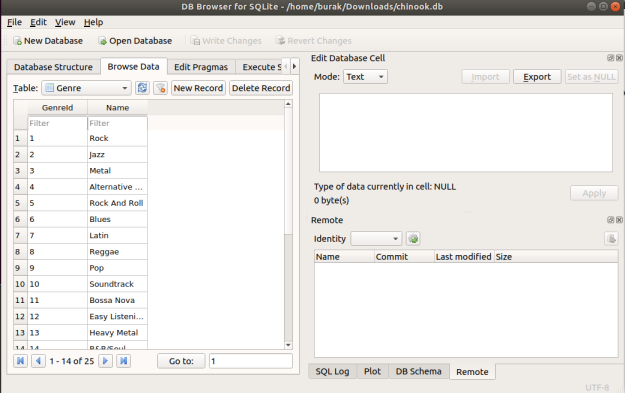

sqlite, Basit, Hızlı Diske Değer Yazma Okuma
Bir Python uygulaması için basit, hızlı bir şekilde diske yazılabilen, ve istendiği zaman anahtar bazlı, tüm dosyayı hafızaya getirmeden hızlı şekilde okunabilen bir yapıya ihtiyaç vardı. Çözüm için önce Python'un sözlük (dictionary) yapısının diske yazılmasına izin veren çözümler akla geliyor, ki muhakkak o çerçevede pek çok çözüm var. Fakat bir çözüm var ki Python kurulumunun zaten içinde, tek bir dosyaya yönlendirilebilen depolaması mevcut, ve her yazımın diske gitmesini, ve hızlı okunabilmesini sağlıyor.
Bu yazılım sqlite3'ten başkası değil. Eğer az SQL yazmayı göze alırsak, ki bu dili tüm bilişimciler bilir, sqlite3 üstteki tüm ihtiyaçlara cevap verir.
Kurmak
pip install pysqlite3
Test edelim,
import sqlite3
db = sqlite3.connect('/tmp/mydb.db')
import random
cursor = db.cursor()
cursor.execute('''CREATE TABLE users(id INTEGER PRIMARY KEY, name TEXT,
phone TEXT, email TEXT, password TEXT)
''')
db.commit()
cursor = db.cursor()
name1 = 'Andres'
phone1 = '3366858'
email1 = 'user@example.com' + str(random.random())
password1 = '12345'
print (email1)
cursor.execute('''INSERT INTO users(name, phone, email, password)
VALUES(?,?,?,?)''', (name1,phone1, email1, password1))
db.commit()
Taban tek bir dosya, hangisi olacağını biz tanımladık, gayet basit. Üstteki insert komutunu ardı ardına işletelim ve arada sırada /tmp/mydb.db dosyasına bakalım. Bu dosya içinde yaratılan farklı isimleri göreceğiz. Dosya büyüklüğünü kontrol etmek ise yaramayabilir çünkü sqlite taban dosyasını her yazimda degil, belli aralıklarla büyütüyor.
Arada satır sayısını alttaki ile kontrol edebiliriz,
cursor = db.cursor()
cursor.execute('''SELECT count(*) FROM users''')
print (cursor.fetchone())
Taban iş bitince db.close ile kapatılır. Fakat düzgün kapatılmasa
bile commit ile yazılanlar kaybolmayacaktır, yani süreç çökse, tekrar
tabana dönsek en son yazdığımız satırı orada bulacağız.
Bu tüm ihtiyaçları karşılıyor, farklı bir süreçte işleyen büyük bir taban değil, kurulmasına bile gerek yok zaten Python sürümünde var, ayrıca diske yazım var, hızlı okuma (herşeyi hafızaya getirmeden) destekleniyor.
Vurgulamak gerekirse tanimlanan veri taban ismindeki bir dosya yok ise, ilk kullanimda otomatik olarak yaratiliyor. Bu isleri cok rahatlatiyor.
Diğer bazı komutlar, bir ek veri sonrası,
import sqlite3
conn = sqlite3.connect('/tmp/mydb.db')
c = conn.cursor()
name2 = 'XXX'
phone2 = 'YYYYY'
email2 = 'xxxx@example.com' + str(random.random())
password1 = '12345'
c.execute('''INSERT INTO users(name, phone, email, password) VALUES(?,?,?,?)''', (name2,phone2,email2,'xxxx'))
conn.commit()
Alınan verileri döngü içinde gezmek,
c = conn.cursor()
rows = c.execute('''SELECT * FROM users''')
for row in rows:
print (row)
(1, 'Andres', '3366858', 'user@example.com0.5546258413014995', '12345')
(2, 'XXX', 'YYYYY', 'xxxx@example.com0.09226623997325056', 'xxxx')
Tabandaki tüm tabloları görmek için
c = conn.cursor()
rows = c.execute('''SELECT * FROM sqlite_master WHERE type='table' ''')
for row in rows: print (row)
Chinook Tabani
Orta ölçekte bir veri tabanı örneği olarak Chinook tabanı var. ChinookSqlite.zip dosyasını açın, ve loadchinook.py dosyasını işletince bu yüklemeyi yapılacaktır.
GUI
sudo apt-get install sqlitebrowse
sqlitebrowse
ile işletirsek, şu şekilde bir görsel program başlayacak.

Yukarı